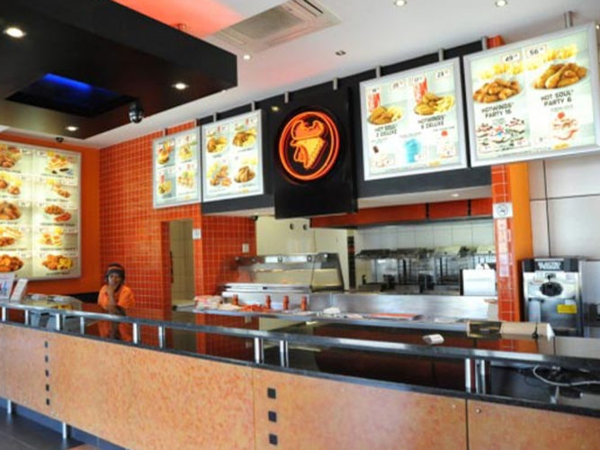
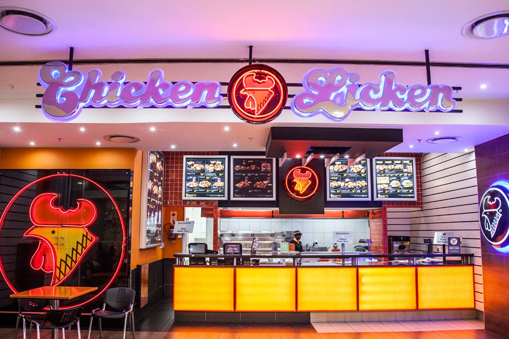
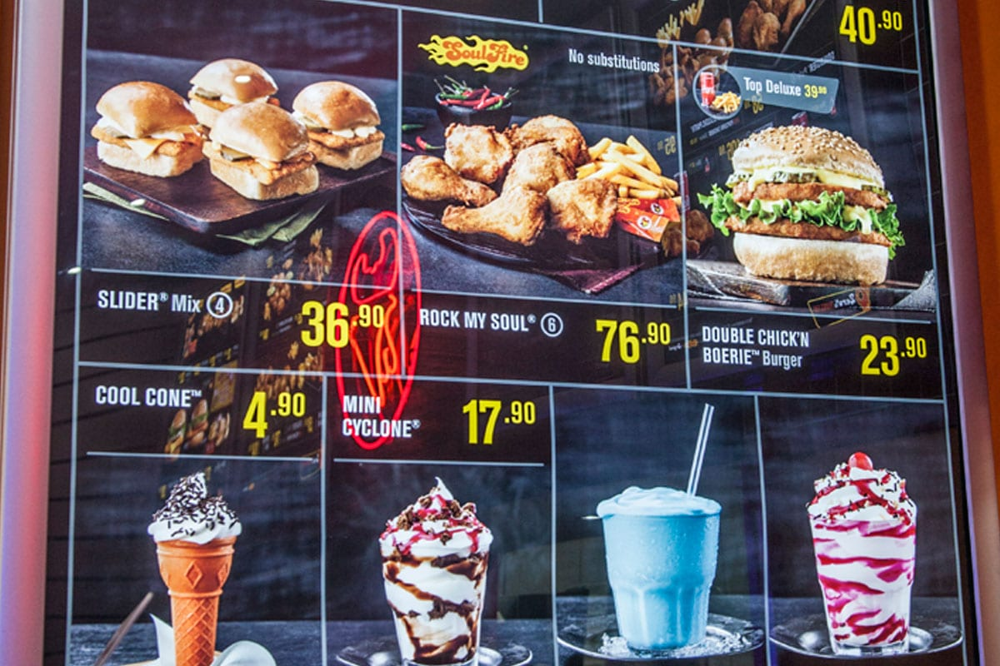

Chicken Licken was founded in South Africa by George Sombonos, the son of a Greek immigrant restaurant owner. Sombonos learned the restaurant trade in the 1970s at the Dairy Den, his father's restaurant in Ridgeway, a suburb in the southern Inner City region of Johannesburg.KFC entered the South African market in 1971. Sombonos bought Chicken Licken's secret fried chicken recipe from the owner of a fast food outlet in Waco, Texas, for US $1,000 while touring the United States in 1972 and introduced it to the Dairy Den. In 1975 he started serving black customers in their cars when apartheid segregation laws restricted their access to restaurants. In 1976 he introduced the drive-through restaurant concept to the Dairy Den after seeing it at Wendy's restaurants in the United States.
  